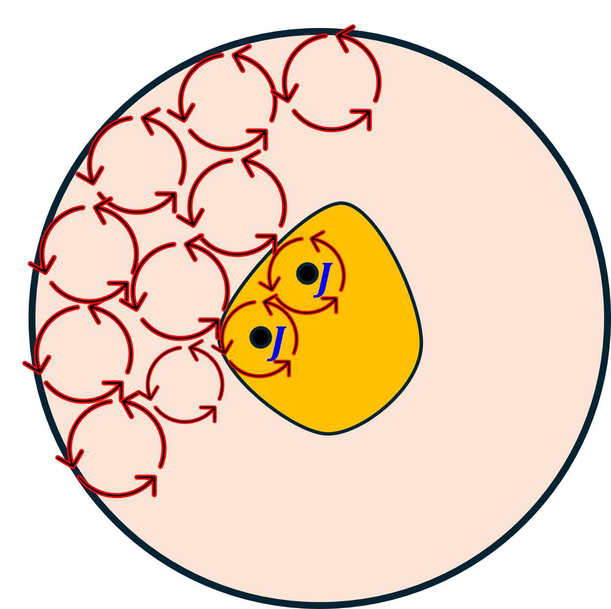
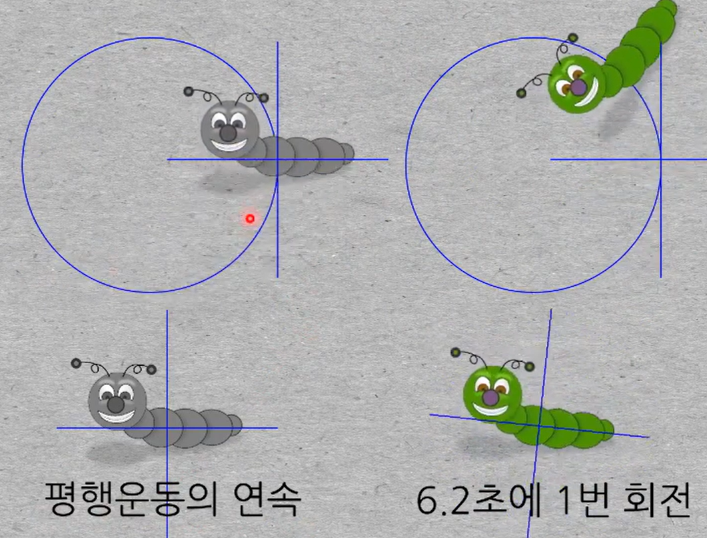
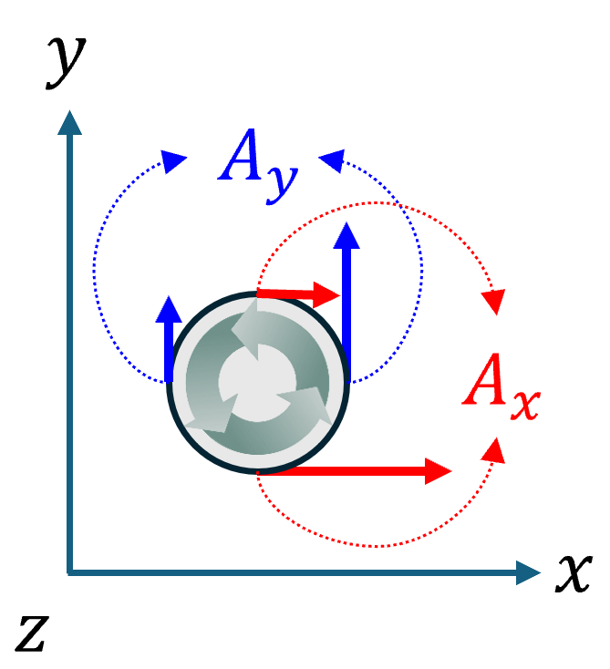

(b) Curl
1. Curl
- 어떤 위치에서, 벡터장을 회전시키는 근원을 구하고자 할 때, 쓰는 연산자(도구).
- 근원의 크기에 비례하여, 벡터장이 회전한다.
- 근원의 방향은 벡터장의 회전방향을 결정(오른손 나사 법칙)한다.
(1) 세번째 Maxwell equation
$$ \nabla\times\vec{E} =-\frac{\partial\vec{B}}{\partial t} $$위 식이 의미하는 바는, 전기장을 회전시키는 근원을 구하기 위해, 어느 위치에서 curl (연산자)도구 를 사용하였다. 연산 결과, 시간에 따라 변하는 자기장이 전기장을 회전시킴을 알았다.
(2) 네번째 Maxwell equation
$$ \nabla\times\vec{H} =\vec{J}+\frac{\partial\vec{D}}{\partial t} $$위 식이 의미하는 바는, 자계강도를 회전시키는 근원을 구하기 위해, 어느 위치에서 curl (연산자)도구 를 사용하였다. 연산 결과, 전류밀도와 시간에 따라 변하는 전속밀도가 자계강도를 회전을 회전시킴을 알았다.
2. Curl 중요 연산자 특성
$$ d^2\vec{s}\times\nabla=d\vec{l} $$proof)
$$ \int_{s'}d^2\vec{s}\cdot\nabla\times\vec{A} =\int_{s'}d^2\vec{s}\times\nabla\cdot\vec{A} =\oint_{l'}d\vec{l}\cdot\vec{A} $$여기에서 공통된 부분을 제거하면, 위에서 제시한 유용한 관계식을 얻을 수 있다. (수학적으로 엄밀한 연산자 정의라기보다는, Stokes 정리를 간략하게 표현하는 매우 유용한 방법이다.)
3. Curl 연산의 해석 영역

위 그림과 같이 해석영역에서, 주황색 영역은 전류밀도가 존재하는 영역이다. 네번째 Maxwell 방정식으로 부터,
$$ \int_{s'}d^2\vec{s}\cdot\nabla\times\vec{H} =\int_{s'}d^2\vec{s}\cdot\vec{J} =I $$첫번째 항을 살펴보면,
$$ \int_{s'}d^2\vec{s}\cdot\nabla\times\vec{H} =\int_{\text{분홍}}d^2\vec{s}\cdot\nabla\times\vec{H}+\int_{\text{주황}}d^2\vec{s}\cdot\nabla\times\vec{H} =0+\int_{\text{주황}}d^2\vec{s}\cdot\vec{J} =I $$stokes 정리를 적용하자.
$$ \int_{s'}d^2\vec{s}\cdot\nabla\times\vec{H} =\oint_{l'}d\vec{l}\cdot\vec{H} =I $$위를 비교해 보면, 원천(근원)을 동일하게 포함한 상태에서, 해석 영역 (폐)경로를 어떻게 잡던간에 적분결과는 동일하다.
4. 주의사항
curl 연산자는, 어떤 위치에서, 벡터장을 회전시키는 근원을 구하고자 할 때 사용한다고 했다. (고정)위치에서 라는 의미가 중요하다.

- 평행운동의 연속: curl 연산의 결과는 0
- 물체의 회전: curl 연산의 결과는 0 이 아님
5. Curl for an orthogonal coordinate
매개변수 공간 → 실공간 직교좌표계
$$ \nabla_u\times\vec{A} =\varepsilon_{ijk}\partial_jA_k\implies \nabla\times\vec{A} =\hat{e}_i\frac{h_i}{h_1h_2h_3}\varepsilon_{ijk}\partial_j\left(h_kA_k\right) $$proof)

(고정)위치에서, (아주 작은)물체가 회전하려면, 공간에 따라 같은 방향들의 힘의 차이가 존재해야 한다. 반시계 방향(기준)으로 회전하려면, 이 회전의 정도를 아래와 같이 표현할 수 있다.
$$ J_z=\frac{\partial A_y}{\partial x}-\frac{\partial A_x}{\partial y} $$각 평면에 대해 계산하면,
$$ \vec{J} =\hat{x}\left(\frac{\partial A_z}{\partial y}-\frac{\partial A_x}{\partial z}\right) +\hat{y}\left(\frac{\partial A_x}{\partial z}-\frac{\partial A_z}{\partial x}\right) +\hat{z}\left(\frac{\partial A_y}{\partial x}-\frac{\partial A_x}{\partial y}\right) $$특히, 데카르트 좌표계에서 위의 식이 바로 나올 수 있도록 학습하자.